Особенности matplotlib#
В данном разделе рассмотрим некоторые особенности библиотеки matplotlib, наиболее часто применяемые на практике, на примере построения графика функции
на отрезке \(x \in [-2, 2]\).
Note
Будем использовать объектно-ориентированный стиль (см. Основы построения графиков).
Данные для визуализации#
Опишем функцию \(f(x)\), инициализируем расчётную сетку (расчётные точки) x и посчитаем значения y в этих точках:
import numpy as np
def cube_of(x):
return x**3
x = np.linspace(-2, 2, 101)
y = cube_of(x)
Подписи графика и его осей, отображение сетки#
# Не забываем импортировать matplotlib.pyplot
import matplotlib.pyplot as plt
# Создали объекты окна fig и осей ax
fig, ax = plt.subplots()
# Строим график типа plot
ax.plot(x, y)
# Подписываем оси, пишем заголовок
ax.set_xlabel("$x$")
ax.set_ylabel("Значение функции $f(x) = x^3$")
ax.set_title("Пример графика $f(x)$")
# Отображаем сетку
ax.grid(True)
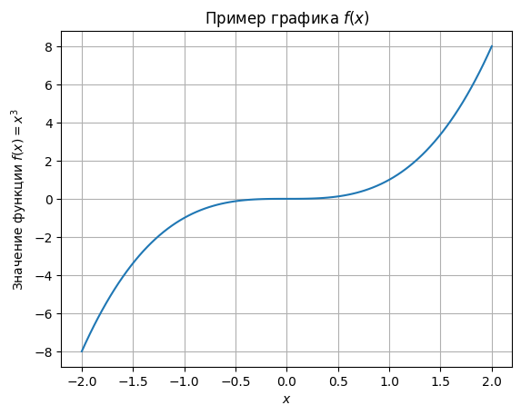
Note
Обратите внимание на текст, обрамлённый $...$.
Текст между $ интепретируется как математическое выражение.
Синтаксис (и возможности), как в текстовом процессоре \(\LaTeX\).
Примеры математических выражений можно найти здесь.
Можно настроить отображение и через единный метод plt.axis.set, передав ему соответствующие именованные аргументы:
# Заново создадим объекты fig и ax,
# чтобы не было наложений на старый рисунок
fig, ax = plt.subplots()
ax.plot(x, y)
ax.set(
xlabel="$x$",
ylabel="Значение функции $f(x) = x^3$",
title="Пример функции $f(x)$"
)
ax.grid(True)
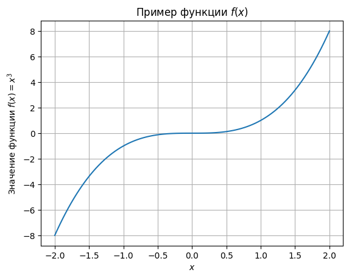
Цвет линии, её стиль и другие параметры#
Сделаем линию утолщённой шриховой красной:
fig, ax = plt.subplots()
ax.plot(
x, y,
color="red", linestyle="--", linewidth=4
);
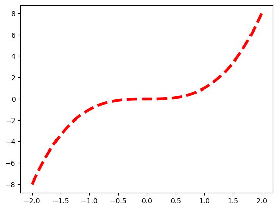
То же самое можно записать в сокращённой форме:
fig, ax = plt.subplots()
ax.plot(
x, y,
c="r", ls="--", lw=4
);
Или даже так:
fig, ax = plt.subplots()
ax.plot(x, y, "r--", lw=4);
Сделать график утолщённым точечным полупрозрачно-чёрным можно так:
fig, ax = plt.subplots()
# lw - linewidth
# alpha - уровень прозрачности
ax.plot(x, y, "k:", lw=4, alpha=0.5);
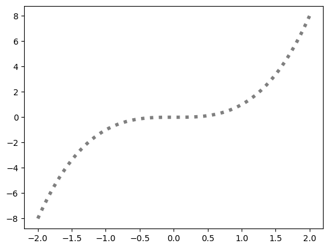
Note
Краткое обозначение чёрного цвета k (key-color) связано с тем, что сокращение b занято синим цветом (blue).
Если писать полное наименование цвета, то чёрный цвет, естественно, задаётся так color="black" или c="black".
Note
Вы можете задавать любой цвет шестнадцатиричным кодом.
Пример: c="#cd5c5c".
Многие именованные параметры линий работают и для линий сетки. Вот, например, чёрная сетка в точку:
fig, ax = plt.subplots()
ax.plot(x, y)
ax.grid(True, c="k", ls=":")
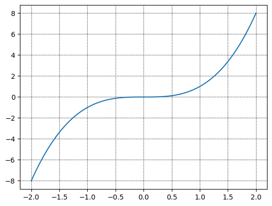
Пределы и масштабы осей#
Matplotlib по умолчанию настраивает оси автоматически на основе входных данных. В большинстве случаев этого достаточно. Но иногда возникает необходимость назначить пределы осей вручную, например, когда эти пределы должны быть одинаковы на разных графиках.
Переназначить пределы осей можно через тот же метод plt.axis.set или посредством отдельных методов set_xlim и set_ylim объекта класса plt.axis:
fig, ax = plt.subplots()
ax.plot(x, y)
ax.set(xlim=[-2, 3], ylim=[-2, 10]);
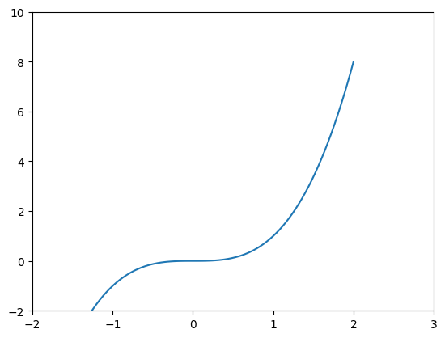
Можно заметить, что на всех ранее построенных графиках масштабы осей x и y неодинаковы. Это искажает пропорции графика (следовательно, и любые углы), что в ряде случаев негативно сказывается на информативности графика. В качестве примера можно привести изображение траектории полёта летательного аппарата в некоторой плоскости.
Сделать масштаб осей одинаковым вручную может быть затруднительно, поскольку масштаб зависит от размеров окна и длины осей. В Matplotlib реализована возможность построения в одинаковом масштабе по осям: plt.axis.set_aspect("equal") или set(aspect="equal"). В таком случае геометрия линий не будет искажена.
При этом, в интерактивном режиме растягивая окно графика, мы будем получать так же одинаковые масштабы осей.
fig, ax = plt.subplots()
ax.plot(x, y)
ax.set(aspect="equal");
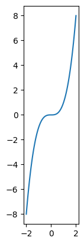
Построение двух графиков в одних осях. Легенда#
Построим в одном поле (окне) график кубической параболы (1), а также графики её производных: \(f'(x) = 3 x^2\) и \(f''(x) = 6 x\).
Опишем функции производных и рассчитаем данные в тех же рассчётных точках x:
def f_cubic_der(x):
return 3 * x**2
def f_cubic_der2(x):
return 6 * x
y_der = f_cubic_der(x)
y_der2 = f_cubic_der2(x)
Для этого просто ещё раз вызовем у оси ax метод plot с данными x и y_der. Заодно подпишем оси и отобразим сетку.
fig, ax = plt.subplots()
# В одних и тех же осях ax
# строим три графика
# - 1
ax.plot(x, y)
# - 2
ax.plot(x, y_der)
# - 3
ax.plot(x, y_der2)
ax.set(
xlabel="$x$",
ylabel="$y$",
title="Функция $f(x) = x^3$ и её производные"
)
ax.grid()
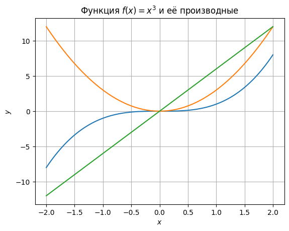
Но как показать, где конкретно график функции, а где графики её производных?
Для этого предназначена легенда (legend) графика:
метод plt.axis.legend.
Чтобы легенда отобразила содержательную информацию, необходимо в каждом методе plt.axis.plot инициализировать поле label (метка, ярлык).
Текст, переданный через данный параметр, будет отображён в легенде графика.
Note
В тексте меток также возможно писать математические выражения "\$...\$".
fig, ax = plt.subplots()
# Подписываем линии через label
ax.plot(x, y, label="Функция $f(x)$")
ax.plot(x, y_der, label="Производная $f'(x)$")
ax.plot(x, y_der2, label="Производная $f''(x)$")
ax.set(
xlabel="$x$",
ylabel="$y$",
title="Функция $f(x) = x^3$ и её производные"
)
ax.grid(True, ls=":", c="k")
# Отобразим легенду:
# по умолчанию будет выбрано наилучшее расположение легенды,
# но его можно назначить и вручную
ax.legend();
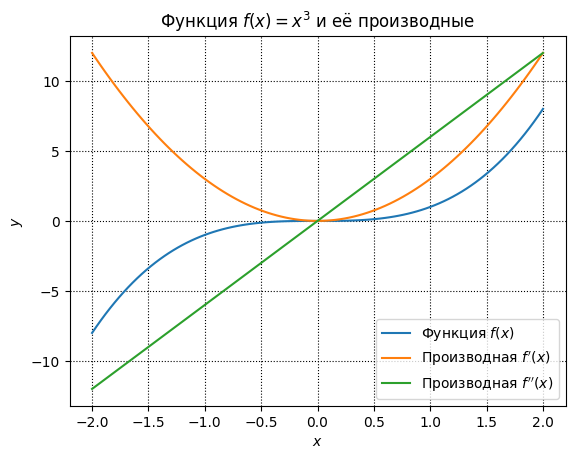
Измения параметров линий графиков будут отражаться и в легенде. Для примера сделаем основной график потолще, первую производную - пунктирной, вторую - полупрозрачной.
fig, ax = plt.subplots()
ax.plot(x, y, label="Функция $f(x)$", lw=3)
ax.plot(x, y_der, label="Производная $f'(x)$", ls="--")
ax.plot(x, y_der2, label="Производная $f''(x)$", alpha=0.5)
ax.set(
xlabel="$x$",
ylabel="$y$",
title="Функция $f(x) = x^3$ и её производные"
)
ax.grid(True, ls=":", c="k")
ax.legend();
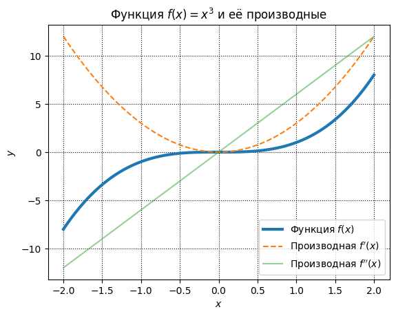
Как видите, стили линий изменились как у самих линий, так и у их обозначений в легенде.
Также как вы уже могли заметить, matplotlib автоматически назначает цвета графикам. Цвета можно назначать и вручную. Когда это полезно? Рассмотрим такой случай.
Представьте, что вы оформляете отчёт по проделанной работе. Вы помещаете туда построенные цветные графики. Но у вас не оказалось цветного принтера, а печать цветного отчёта со множеством картинок и графиков в копирке может влететь в копеечку. Печать же чёрно-белого варианта работы может привести к такому результату:
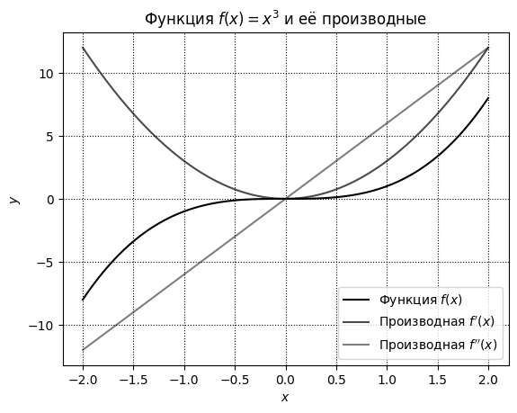
Различие между графиками размыто. Различить графики можно по стилю линий или их толщине. По умолчанию Matplotlib ничего со стилем и толщиной линий не делает.
Рекомендация следующая. Если вы планируете печать или публикацию своей работы в оттенках серого, то стройте все графики в чёрном цвете, разделяя их стилями и/или толщинами линий, например, так:
fig, ax = plt.subplots()
ax.plot(
x, y,
label="Функция $f(x)$", c="k"
)
# Вручную меняем стиль линий через параметр ls
ax.plot(
x, y_der,
label="Производная $f'(x)$", c="k", ls="--"
)
ax.plot(
x, y_der2,
label="Производная $f''(x)$", c="k", ls="-."
)
ax.set(
xlabel="$x$",
ylabel="$y$",
title="Функция $f(x) = x^3$ и её производные"
)
ax.grid(True, ls=":", c="k")
ax.legend();
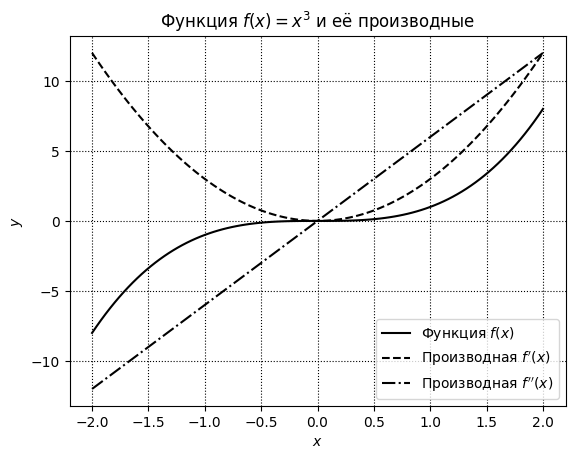
Либо используйте такие цвета (а matplotlib по умолчанию именно такие и использует), которые заметно отличаются друг от друга в сером варианте.
В разделе Оформление графиков в Matplotlib рассмотрим различные стили оформления графиков и создадим собственный стиль, который вы сможете использовать при оформлении своих работ.
Вертикальные, горизонтальные и наклонные линии#
Методы осей axline, axvline и axhline класса plt.axis предназначены для изображения бесконечных наклонных, вертикальных и горизонтальных прямых соответственно.
Бесконечность в данном случае означает, что прямые проходят через всё поле построения графика, в т.ч. после масштабирования последнего.
Рассмотрим график такой гиперболы:
def f_hyperbola(x):
return 1 / (x - 2) - 3
xh = np.linspace(2.1, 12, 301)
yh = f_hyperbola(xh)
С помощью axvline и axhline мы можем показать соответственно вертикальную \(x = 2\) и горизонтальную \(y = -3\) асимптоты:
fig, ax = plt.subplots()
ax.plot(xh, yh)
ax.axvline(2, c="r")
ax.axhline(-3, c="b")
ax.set(
xlabel="$x$",
ylabel=r"$f(x) = -3 + \frac{1}{x - 2}$"
);
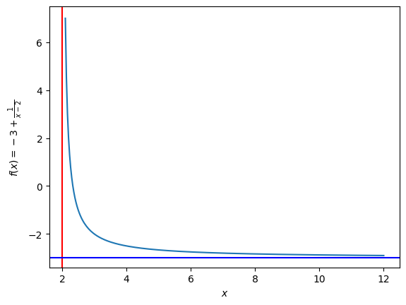
Известно, что для данной гиперболы значение производной
в точке \(x_0 = 3\) равно \(-1\), т.е. тангенс угла наклона касательной прямой в этой точке \(k = -1\). Значение самой функции \(f(x_0) = -2\). Используя эти данные, можно построить касательную к функции \(f(x)\) в точке \(x_0\).
Уравнение касательной \(f_{\rm tan}(x) = k x + b\) получается элементарно: тангенс наклона известен (\(k = -1\)), смещение прямой
Тогда уравнение касательной имеет вид
Эта прямая пройдёт через две точки: \((3, -2)\) и \((2, -1 )\).
Прямая по двум точкам строится методом axline так:
fig, ax = plt.subplots()
ax.plot(xh, yh)
ax.axvline(2, c="r")
ax.axhline(-3, c="b")
ax.axline((3, -2), (2, -1), c="g")
ax.set(
xlabel="$x$",
ylabel=r"$f(x) = -3 + \frac{1}{x - 2}$"
);
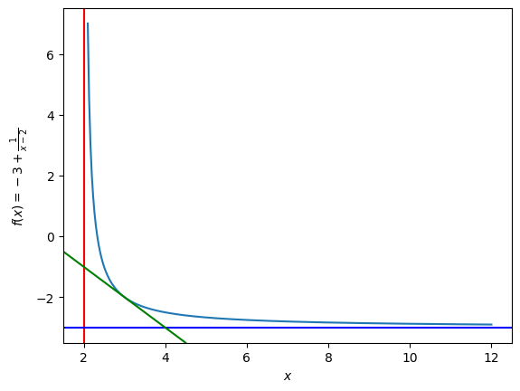
Можно отдельно выделить точку касания \((x_0; f(x_0)) = (3; -2)\):
fig, ax = plt.subplots()
ax.plot(xh, yh)
ax.axvline(2, c="r", alpha=0.5)
ax.axhline(-3, c="b", alpha=0.5)
# Касательная
ax.axline((3, -2), (2, -1), c="g")
# Точка касания:
# ls="" - не соединять точки данных;
# marker="o" - изображать точки данных кружком
ax.plot(3, -2, ls="", marker="o", c="pink")
ax.set(
xlabel="$x$",
ylabel=r"$f(x) = -3 + \frac{1}{x - 2}$"
);
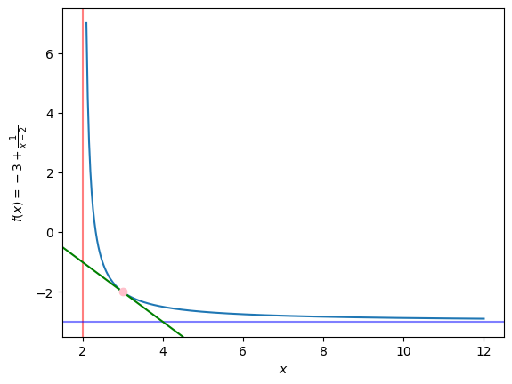
Несколько осей на одном поле#
Рассмотрим, как в одном окне построить несколько графики в нескольких осях. Для этого сформулируем новую задачу.
Пусть задана функция движения материальной точки вида
Функция скорости соответственно имеет вид
Требуется построить графики этих функций один под другим.
Сформируем данные для визуализации:
def f_coordinate(t):
return t**2 + t*np.sin(t) + 1/(t + 1)
def f_velocity(t):
return 2*t + np.sin(t) + t*np.cos(t) - 1/(t + 1)**2
t = np.linspace(0, 3, 101)
x, v = f_coordinate(t), f_velocity(t)
Подробнее рассмотрим метод plt.sublots.
Как раз с его помощью можно решить поставленную задачу, создав несколько субграфиков:
fig, (ax_top, ax_bottom) = plt.subplots(nrows=2)
# Задали расположение графиков в 2 строки
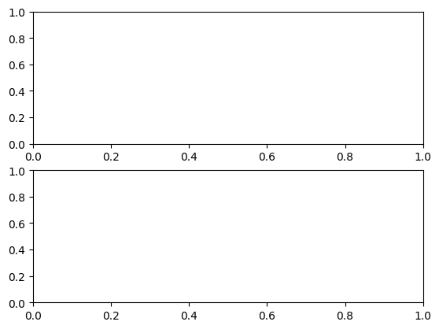
Теперь у нас есть два рабочих поля для построения графиков (две оси) - верхнее и нижнее.
Объекты ax_top и ax_bottom “работают” точно так же, как рассмотренные выше бъекты ax -
они такие же объекты класса plt.axis.
fig, (ax_top, ax_bottom) = plt.subplots(nrows=2)
ax_top.plot(t, x)
ax_bottom.plot(t, v);
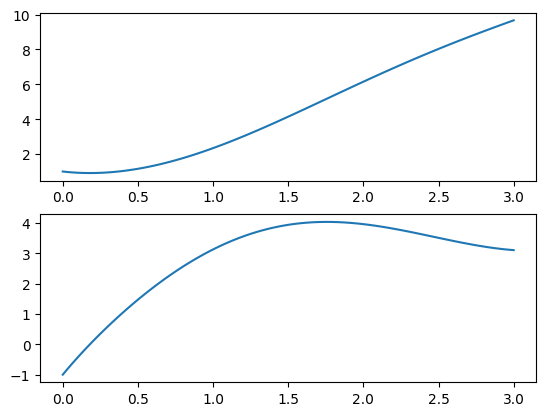
Подпишем оси:
fig, (ax_top, ax_bottom) = plt.subplots(nrows=2)
ax_top.plot(t, x)
ax_top.set(xlabel="$t$, с", ylabel="$x$, м")
ax_bottom.plot(t, v)
ax_bottom.set(xlabel="$t$, с", ylabel="$v$, м/с");
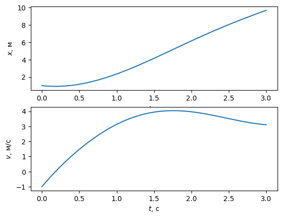
Заметили, что подпись оси x на верхнем графике перекрыта нижним графиком?
С этим можно справиться либо изменением размера фигуры, либо назначением общих осей. Второй вариант в данном случае - более хорошее решение. Видно, что данные на осях x обоих графиков одинаковы и в физическом, и в численном отношении - это время \(t\).
Сделать оси x общими можно передачей в метод plt.subplots аргумента sharex=True.
Также уберём метку xlabel в ax_top.set.
fig, (ax_top, ax_bottom) = plt.subplots(nrows=2, sharex=True)
ax_top.plot(t, x)
ax_top.set(ylabel="$x$, м")
ax_bottom.plot(t, v)
ax_bottom.set(xlabel="$t$, с", ylabel="$v$, м/с");
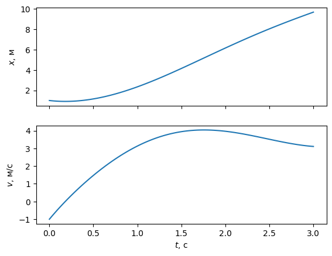
Теперь графики выглядят более органично. Добавим названия (title) каждого графика:
fig, (ax_top, ax_bottom) = plt.subplots(nrows=2, sharex=True)
ax_top.plot(t, x)
ax_top.set(
ylabel="$x$, м",
title="Координата точки"
)
ax_top.grid()
ax_bottom.plot(t, v)
ax_bottom.set(
xlabel="$t$, с",
ylabel="$v$, м/с",
title="Скорость точки"
)
ax_bottom.grid();
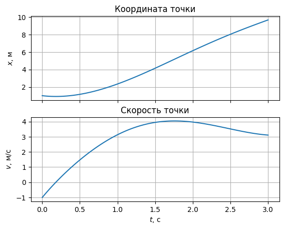